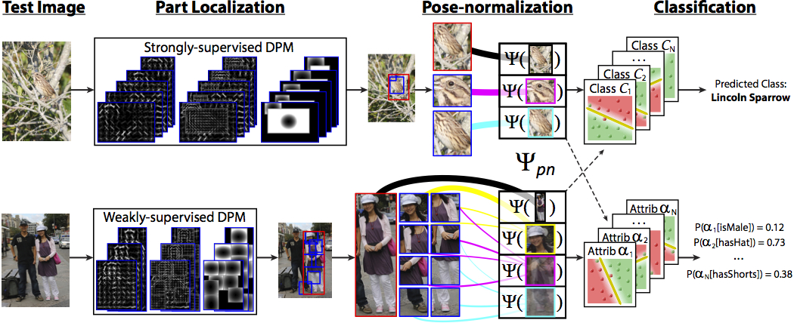

Deformable Part Descriptors (DPD) for Fine-grained Recognition and Attribute Prediction

Abstract
Recognizing objects in fine-grained domains can be
extremely challenging due to the subtle differences between
subcategories. Discriminative markings are often
highly localized, leading traditional object recognition approaches
to struggle with the large pose variation often
present in these domains. Pose-normalization seeks to align
training exemplars, either piecewise by part or globally
for the whole object, effectively factoring out differences
in pose and in viewing angle. Prior approaches relied
on computationally-expensive filter ensembles for part localization
and required extensive supervision. This paper
proposes two pose-normalized descriptors based on
computationally-efficient deformable part models. The
first leverages the semantics inherent in strongly-supervised
DPM parts. The second exploits weak semantic annotations
to learn cross-component correspondences, computing
pose-normalized descriptors from the latent parts of
a weakly-supervised DPM. These representations enable
pooling across pose and viewpoint, in turn facilitating tasks
such as fine-grained recognition and attribute prediction.
Experiments conducted on the Caltech-UCSD Birds 200
dataset and Berkeley Human Attribute dataset demonstrate
significant improvements over state-of-art algorithms.
Paper
Ning Zhang, Ryan Farrell, Forrest Iandola, and Trevor Darrell.
"Deformable Part Descriptors for Fine-grained Recognition and Attribute Prediction."
International Conference on Computer Vision (ICCV), 2013.
Download (PDF)
Download Code (TAR)
Download Code (ZIP)